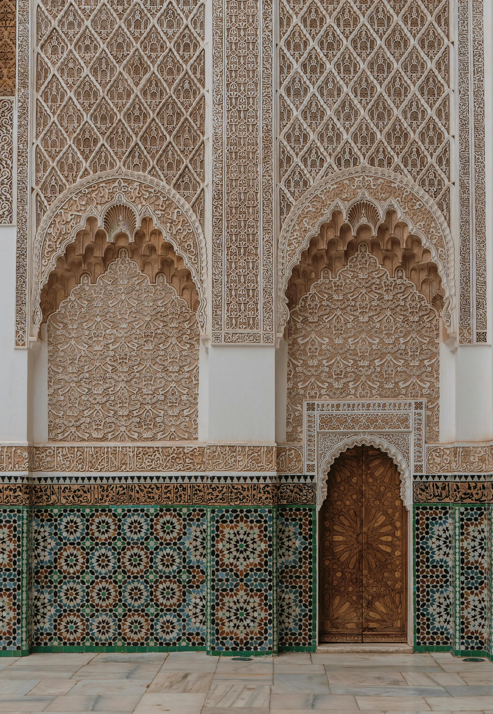
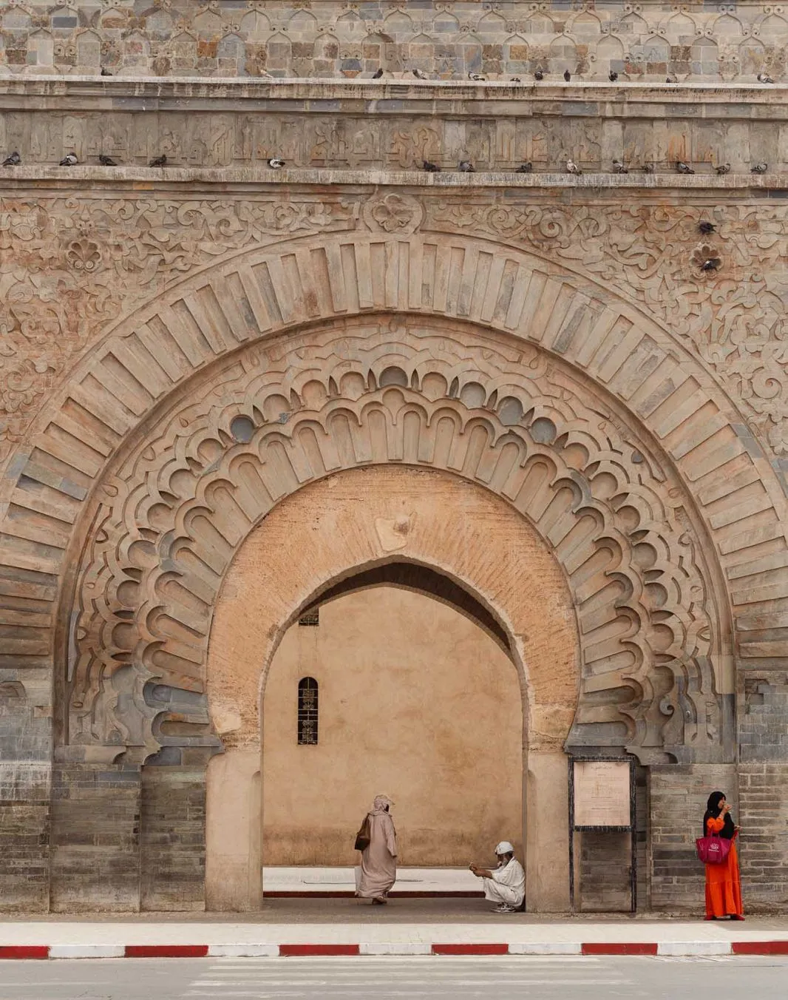

Send your booking enquiry without paying online.
Get a quick, personal reply to your enquiry.
Confirm your plans directly.
Join a small shared group or enjoy your tour privately.
Click a tour card below to check its full details, itinerary, and pricing.




Explore the historic Mellah, its synagogue and old cemetery, then discover a local market, a traditional public oven and quieter corners of the medina.


Discover Marrakech’s history with a licensed local guide, exploring the medina, its lively souks and two remarkable heritage sites.


Taste Marrakech as you walk, sampling local favourites such as msemmen, harira, tanjia, pastilla and traditional pastries.
Can't find the meeting point? Here's exactly where to go 👇
Tell me what you're curious to discover in Marrakech and I'll suggest the right private tour, or build you a custom itinerary based on your preferences.